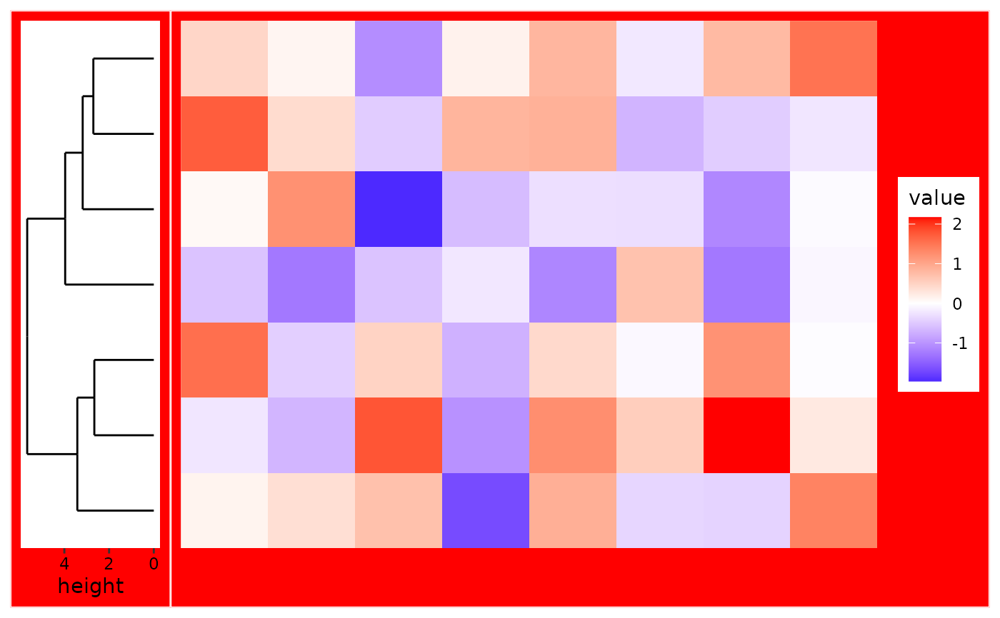
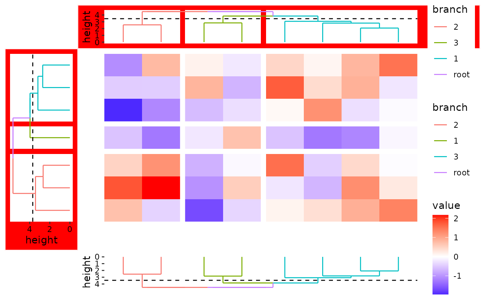

![[Experimental]](figures/lifecycle-experimental.svg)
The quad_scope() function controls how plot elements (e.g., themes, scales,
or other ggplot objects) are applied within a ggheatmap() or
quad_layout() context. It allows you to direct modifications to specific
annotation positions or the main plot without altering the currently active
layout or nesting state.
Arguments
- object
An object which can be added to the ggplot.
- position
A string or character vector specifying one or more positions (
"t","l","b","r", and"i") indicating wherexshould be applied. Use'i'to refer to the quad body (i.e., the main plot). IfNULL, the active annotation context is cleared, behaving as if no annotation is active. See the Details section for more information.
Details
Default behavior when adding objects wrapped with quad_scope():
When no annotation stack is active: Modifications are applied normally without needing
quad_scope().When an annotation stack is active:
quad_scope()ensures the object is also applied to:The active annotation stack
The main plot
When position is manually specified:
If
NULL, it behaves as if no annotation is activeIf a string, the object is applied only to the specified positions (to include the main plot, explicitly add
"i"toposition)
Examples
set.seed(123)
small_mat <- matrix(rnorm(56), nrow = 7)
# By wrapping object with `quad_scope()`, the `+` operator will apply the
# object not only to the active plot in the annotation stack, but also to
# the main plot unless specified by `main` argument otherwise.
ggheatmap(small_mat) +
# initialize the left annotation
anno_left(size = 0.2) +
align_dendro() +
# apply the object not only to the active plot in the annotation stack,
# but also to the main plot
quad_scope(theme(plot.background = element_rect(fill = "red")))
#> → heatmap built with `geom_tile()`

# When the `position` argument is manually set, the
# we must explicitly include `"i"` in `position` to apply it to the main plot
ggheatmap(small_mat) +
anno_left(size = 0.2) +
align_dendro(aes(color = branch), k = 3L) +
anno_top(size = 0.2) +
align_dendro(aes(color = branch), k = 3L) +
anno_bottom(size = 0.2) +
align_dendro(aes(color = branch), k = 3L) -
# Modify the background of all plots in the left and top annotation
quad_scope(theme(plot.background = element_rect(fill = "red")), "tl")
#> → heatmap built with `geom_tile()`
